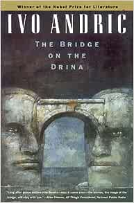

<!DOCTYPE html>
<html lang="en">

<head>
	<meta charset="UTF-8">
	<meta http-equiv="X-UA-Compatible" content="IE=edge">
	<meta name="viewport" content="width=device-width, initial-scale=1.0, maximum-scale=1.0, user-scalable=no" />
	<title>National Book Lovers Day</title>
	<!--Including leaflet in the application. Always load CSS file before JS file-->
	<link rel="stylesheet" href="leaflet/leaflet.css" />
	<link rel="stylesheet" href="style.css" />
	<script src="leaflet/leaflet.js"></script>
</head>

<body>

	<!--Creating the map container and is always a <div>-->
	<div id="map"></div>

	<!--Script files goes at the bottom of the body section-->
	<script>
		var map = L.map('map', {
			center: [29.819, 24.185],
			zoom: 3
		});

		// adding first basemap to map
		var stamen_watercolor =  L.tileLayer('https://tiles.stadiamaps.com/tiles/stamen_watercolor/{z}/{x}/{y}.{ext}', {
			minZoom: 1,
			maxZoom: 16,
			attribution: '&copy; <a href="https://www.stadiamaps.com/" target="_blank">Stadia Maps</a> &copy; <a href="https://www.stamen.com/" target="_blank">Stamen Design</a> &copy; <a href="https://openmaptiles.org/" target="_blank">OpenMapTiles</a> &copy; <a href="https://www.openstreetmap.org/copyright">OpenStreetMap</a> contributors',
			ext: 'jpg'
		});

		stamen_watercolor.addTo(map);

		// adding second basemap to map
		var osm = L.tileLayer('http://{s}.tile.osm.org/{z}/{x}/{y}.png', {
			attribution: '&copy; <a href="http://osm.org/copyright">OpenStreetMap</a> contributors'
		});

		osm.addTo(map);

		// adding third basemap to map
		var esri_WorldStreetMap = L.tileLayer('https://server.arcgisonline.com/ArcGIS/rest/services/World_Street_Map/MapServer/tile/{z}/{y}/{x}', {
			attribution: 'Tiles &copy; Esri &mdash; Source: Esri, DeLorme, NAVTEQ, USGS, Intermap, iPC, NRCAN, Esri Japan, METI, Esri China (Hong Kong), Esri (Thailand), TomTom, 2012'
		});

		esri_WorldStreetMap.addTo(map);

		// adding markers and pop up content
		var vikramSeth = L.marker([22.53, 88.36], { title: 'Vikram Seth' });
		vikramSeth.addTo(map);

		var popupContent = '<b>Author</b>: Vikram Seth';
		popupContent += '<br>';
		popupContent += '<b>Book</b>: A Suitable Boy';
		popupContent += '<br>';
		popupContent += '<br>';
		popupContent += '';
		popupContent += '<br>';
		popupContent += '<p><b>A Suitable Boy</b>, is set in a newly post-independence, post-partition India. The novel follows four families during 18 months, and centres on Mrs. Rupa Mehras efforts to arrange the marriage of her younger daughter, Lata, to a "suitable boy".Lata is a 19 - year - old university student who refuses to be influenced by her domineering mother or opinionated brother, Arun.Her story revolves around the choice she is forced to make between her suitors Kabir, Haresh, and Amit. </p>';

		vikramSeth.bindPopup(popupContent);

		var ivoAndric = L.marker([44.22, 17.64], { title: 'Ivo Andric' });
		ivoAndric.addTo(map);

		var popupContent = '<b>Author</b>: Ivo Andric';
		popupContent += '<br>';
		popupContent += '<b>Book</b>: The Bridge On The Drina';
		popupContent += '<br>';
		popupContent += '<br>';
		popupContent += '';
		popupContent += '<br>';
		popupContent += '<p><b>The Bridge On The Drina</b>, is a vivid depiction of the suffering history has imposed upon the people of Bosnia from the late 16th century to the beginning of World War I. This remarkable, timely book serves as a reliable guide to its people and history. </p>';

		ivoAndric.bindPopup(popupContent);

		var ivanaBrlicMazuranic = L.marker([45.26, 15.23], { title: 'Ivana Brlic Mazuranic' });
		ivanaBrlicMazuranic.addTo(map);

		var popupContent = '<b>Author</b>: Ivana Brlic Mazuranic';
		popupContent += '<br>';
		popupContent += '<b>Book</b>: Croatian Tales Of Long Ago';
		popupContent += '<br>';
		popupContent += '<br>';
		popupContent += '';
		popupContent += '<br>';
		popupContent += '<p><b>Croatian Tales Of Long Ago</b>, features a series of fairy tales heavily inspired by motifs taken from ancient Slavic mythology of pre-Christian Croatia. These children’s stories are seen as one of the most typical examples of Ivana’s writing style which has been compared by literary critics to Hans Christian Andersen and J.R.R.Tolkien due to the way it combines original fantasy plots with folk mythology. </p>';

		ivanaBrlicMazuranic.bindPopup(popupContent);

		var chimamandaNgoziAdichie = L.marker([6.44, 7.50], { title: 'Chimamanda Ngozi Adichie' });
		chimamandaNgoziAdichie.addTo(map);

		var popupContent = '<b>Author</b>: Chimamanda Ngozi Adichie';
		popupContent += '<br>';
		popupContent += '<b>Book</b>: Americanah';
		popupContent += '<br>';
		popupContent += '<br>';
		popupContent += '';
		popupContent += '<br>';
		popupContent += '<p><b>Americanah</b>, is the story of Ifemelu, her early life in Nigeria, her time as an expat working in America, and her return to her home country. It is the story of her family, friends, and lovers. It is an account of the expatriate African experience in America and the UK, and of the expatriate returning to Nigeria. </p>';

		chimamandaNgoziAdichie.bindPopup(popupContent);


		var yukioMishima = L.marker([35.70, 139.77], { title: 'Yukio Mishima' });
		yukioMishima.addTo(map);

		var popupContent = '<b>Author</b>: Yukio Mishima';
		popupContent += '<br>';
		popupContent += '<b>Book</b>: Confessions of a Mask';
		popupContent += '<br>';
		popupContent += '<br>';
		popupContent += '';
		popupContent += '<br>';
		popupContent += '<p><b>Confessions of a Mask</b>, is regarded as Mishimas finest book. This is the story of a Japanese boys development towards a homosexual identity during and after the Second World War. Detailing his progress from an isolated childhood through adolescence to manhood, including an abortive love affair with a classmates sister, it reports the inner life of a boys preoccupation with death.</p>';

		yukioMishima.bindPopup(popupContent);

		var simoneDeBeauvoir = L.marker([48.85, 2.35], { title: 'Simone De Beauvoir' });
		simoneDeBeauvoir.addTo(map);

		var popupContent = '<b>Author</b>: Simone De Beauvoir';
		popupContent += '<br>';
		popupContent += '<b>Book</b>: The Second Sex ';
		popupContent += '<br>';
		popupContent += '<br>';
		popupContent += '';
		popupContent += '<br>';
		popupContent += '<p><b>The Second Sex</b>, stands, seven decades after its first appearance, as the first landmark in the modern feminist upsurge that has transformed perceptions of the social relationship of man and womankind in our time. It is at once a work of anthropology and sociology, of biology and psychoanalysis where author discusses the treatment of women in the present society as well as throughout all of history. </p>';

		simoneDeBeauvoir.bindPopup(popupContent);

		var aminMaalouf = L.marker([33.88, 35.50], { title: 'Amin Maalouf' });
		aminMaalouf.addTo(map);

		var popupContent = '<b>Author</b>: Amin Maalouf';
		popupContent += '<br>';
		popupContent += '<b>Book</b>: Leo The African ';
		popupContent += '<br>';
		popupContent += '<br>';
		popupContent += '';
		popupContent += '<br>';
		popupContent += '<p><b>Leo The African</b>, a 1986 novel by Amin Maalouf, written in the form of a memoir, depicting the life of the eponymous Renaissance-era traveler, Leo Africanus. The work explores confrontations between Islam and Christianity as well as the mutual influence that the two religions had on each other and on the people they governed.</p>';

		aminMaalouf.bindPopup(popupContent);

		var salmanRushdie = L.marker([19.06, 72.87], { title: 'Salman Rushdie' });
		salmanRushdie.addTo(map);

		var popupContent = '<b>Author</b>: Salman Rushdie';
		popupContent += '<br>';
		popupContent += "<b>Book</b>: Midnight's Children";
		popupContent += '<br>';
		popupContent += '<br>';
		popupContent += '';
		popupContent += '<br>';
		popupContent += "<p><b>Midnight's Children</b>, is a postcolonial, postmodern and magical realist story told by its chief protagonist, Saleem Sinai, set in the context of historical events. The style of preserving history with fictional accounts is self-reflexive.</p>";

		salmanRushdie.bindPopup(popupContent);


		var hanifKureishi = L.marker([51.39, 0.02], { title: 'Hanif Kureishi' });
		hanifKureishi.addTo(map);

		var popupContent = '<b>Author</b>: Hanif Kureishi';
		popupContent += '<br>';
		popupContent += "<b>Book</b>: The Budhha Of Suburbia";
		popupContent += '<br>';
		popupContent += '<br>';
		popupContent += '';
		popupContent += '<br>';
		popupContent += "<p><b>The Budhha of Suburbia</b>, is said to be very autobiographical. It is about Karim, a mixed-race teenager, who is desperate to escape suburban South London and to have new experiences in London in the 1970s. He eagerly seizes an unlikely opportunity when a life in the theatre presents itself as a possibility.</p>";

		hanifKureishi.bindPopup(popupContent);


		var bernardineEvaristo = L.marker([51.48, 0.05], { title: 'Bernardine Evaristo' });
		bernardineEvaristo.addTo(map);

		var popupContent = '<b>Author</b>: Bernardine Evaristo';
		popupContent += '<br>';
		popupContent += "<b>Book</b>: Girl, Woman, Other";
		popupContent += '<br>';
		popupContent += '<br>';
		popupContent += '';
		popupContent += '<br>';
		popupContent += "<p><b>Girl, Woman, Other</b>, follows the lives and struggles of twelve very different characters. Mostly women, black and British, they tell the stories of their families, friends and lovers, across the country and through the years.</p>";

		bernardineEvaristo.bindPopup(popupContent);


		var aliceWalker = L.marker([33.32, -83.38], { title: 'Alice Walker' });
		aliceWalker.addTo(map);

		var popupContent = '<b>Author</b>: Alice Walker';
		popupContent += '<br>';
		popupContent += '<b>Book</b>: The Color Purple';
		popupContent += '<br>';
		popupContent += '<br>';
		popupContent += '';
		popupContent += '<br>';
		popupContent += '<p><b>The Color Purple</b>, documents the traumas and gradual triumph of Celie, an African American teenager raised in rural isolation in Georgia, as she comes to resist the paralyzing self-concept forced on her by others. </p>';

		aliceWalker.bindPopup(popupContent);

		var basemaps = {
			"Stamen Watercolor": stamen_watercolor,
			"OSM": osm,
			"Esri Street Map": esri_WorldStreetMap
		};

		L.control.layers(basemaps).addTo(map);

		var scale = L.control.scale();
		scale.addTo(map);

		L.control.scale({ position: 'bottomleft' });

	</script>
</body>

</html>
